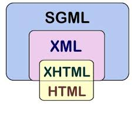

XML es un metalenguaje de etiquetas desarrollado por el World Wide Web Consortium. El World Wide Web Consortium, el W3C es un consorcio internacional que crea recomendaciones para la World Wide Web.
XML no es un lenguaje en el sentido de que no define un conjunto de etiquetas. XML es un metalenguaje porque permite crear lenguajes.
Así, XML proporciona una serie de reglas para que cualquiera pueda definir su propio conjunto de etiquetas y atributos y pueda definir las relaciones que existen entre esas etiquetas. Al conjunto de reglas de un lenguaje se llama gramática del lenguaje.
Por lo tanto, tanto GML como SGML y XML, son metalenguajes. Los tres permiten crear lenguajes. Como hemos visto, SGML está inspirado por GML y a su vez, XML está inspirado por SGML.
Por otro lado, HTML, XHTML, MathML, RSS, SVG y otros más, sí que son lenguajes. HTML está basado en las reglas de SGML, mientras que los otros lenguajes que he nombrado están basados en XML.
Así, XML es un lenguaje de marcas puramente estructural que no incluye ninguna información relativa al diseño. A diferencia de HTML, las etiquetas indican el significado de los datos en lugar del formato con el que se van a visualizar los datos. XML es un lenguaje simple de descripción de información.
XML es un metalenguaje caracterizado por:
- Permitir definir etiquetas propias.
- Permitir asignar atributos a las etiquetas.
- Utilizar un esquema para definir de forma exacta las etiquetas y los atributos.
- La estructura y el diseño son independientes.
Un documento XML puede ser correcto a dos niveles:
- Bien formado. las características que debe cumplir un documento XML para que se considere bien formado son:
- Aunque no es obligatorio, debe comenzar con la declaración XML que indica la versión utiliza y el conjunto de caracteres utilizado.
- A continuación viene el cuerpo del documento que se compone de elementos donde un elemento se compone de una etiqueta inicial y otra final que tienen el mismo nombre. La etiqueta inicial puede llevar atributos, cosa que no puede suceder con la etiqueta final. Los atributos pueden tener un valor. Por último, las etiquetas pueden llevar contenido que pueden ser otras etiquetas o texto.
- elemento raíz único
- estructura jerárquica
- no se admite solapamiento
- se distinguen las mayúsculas y las minúsculas
- se permiten elementos vacíos
- los valores de los atributos se deben escribir entre comillas dobles o simples. Existen atributos reservados que se emplean en la especificación de XML, que comienzan con xml:.
- los comentarios se deben escribir entre .
- espacios en blanco: tabulador, avance de línea, retorno de carro y espacio en blanco son equivalentes.
- caracteres especiales: si se quieren escribir los caracteres <,>,&,",' hay que hacerlo por medio de <, >,&, ", '.
- secciones CDATA. Permiten que el analizador ignore ciertas secciones del documento. Sintaxis:
- Válido. En primer lugar debe estar bien formado y, después, cumplir la definición del lenguaje que se está empleando por medio de DTD, XML Schema,...